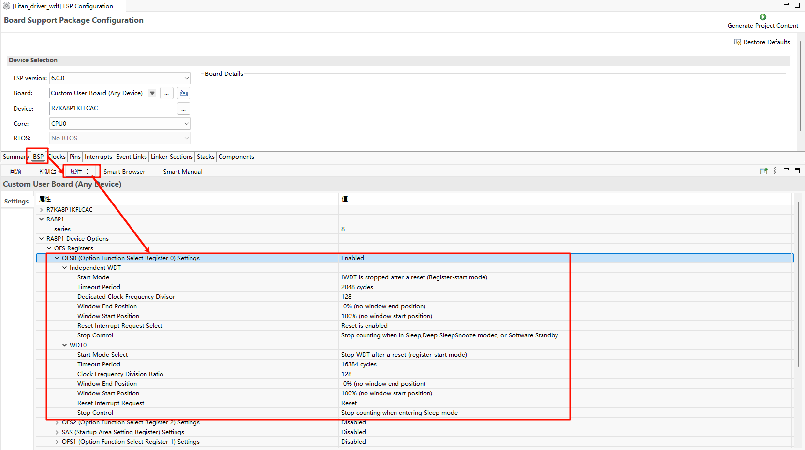
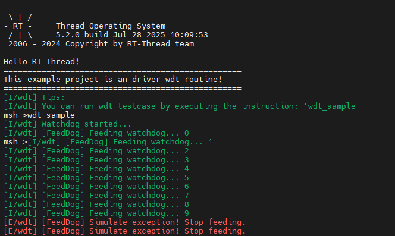

WDT Driver Example Guide
中文 | English
Overview
This project is a Watchdog Timer (WDT) driver example for the RA8P1 Titan Mini board based on the RT-Thread operating system. The watchdog timer is an important reliability component in embedded systems, used to monitor system running status and automatically reset when the system encounters exceptions, ensuring stable system operation.
Directory Structure
project/Titan_Mini_driver_wdt/
├── src/
│ └── hal_entry.c # Main entry file, containing watchdog initialization and dog feeding thread
├── ra/
│ ├── fsp/
│ │ └── src/
│ │ └── r_wdt/ # Renesas FSP watchdog driver source code
│ └── inc/
│ └── api/
│ └── r_wdt_api.h # Watchdog API interface definition
├── ra_cfg/
│ └── fsp_cfg/
│ └── r_wdt_cfg.h # Watchdog configuration
├── rtconfig.h # RT-Thread configuration file
└── Kconfig # Project configuration file
1. Hardware Introduction - RA8P1 WDT Features
1.1 Watchdog Overview
The watchdog timer is a special timer used to monitor system running status. Under normal circumstances, the application needs to periodically “feed the dog” (reset the timer). If the application falls into a deadlock, runs away, or encounters other abnormal states and cannot feed the dog on time, the watchdog will trigger a system reset to ensure the system returns to normal.
1.2 RA8P1 WDT Main Features
The RA8P1 MCU has a built-in feature-rich watchdog timer with the following characteristics:
1.2.1 Basic Features
Independent Operation: The watchdog operates independently of the main CPU and can continue counting even when the CPU is stopped
Multiple Timeout Periods: Supports timeout settings of 128, 512, 1024, 2048, 4096, 8192, 16384 clock cycles
Configurable Clock Division: Supports 1, 4, 16, 32, 64, 128, 256, 512, 2048, 8192 division
Window Watchdog Function: Supports window watchdog mode, allowing dog feeding only within a specific time window
1.2.2 Reset Modes
Reset Mode: Triggers system reset after timeout
NMI Mode: Triggers Non-Maskable Interrupt (NMI) after timeout for error handling and diagnostics
1.2.3 Operating Modes
Auto-start Mode: Automatically starts watchdog after reset
Register-start Mode: Starts through software control
1.2.4 Sleep Mode Support
Stop Control: Configurable whether to stop counting in sleep mode
Low Power Optimization: Supports low power application scenarios
1.3 Hardware Parameter Configuration
According to the configuration in hal_entry.c:
#define WDT_DEVICE_NAME "wdt" // Default watchdog device name
#define WDT_FEED_INTERVAL 1000 // Dog feeding interval (unit: ms)
#define WDT_TIMEOUT 3 // Watchdog timeout (unit: s)
2. Software Architecture - RT-Thread Watchdog Device Framework
2.1 RT-Thread Watchdog Driver Architecture
RT-Thread provides a standardized watchdog device driver framework that operates watchdog modules of different hardware through a unified API interface.
2.1.1 Driver Layer Structure
Application Layer
↓
RT-Thread Device Driver Layer
↓
Hardware Abstraction Layer (HAL)
↓
Chip Register Operation Layer
2.1.2 Main Components
Device Management:
rt_devicestructure manages device instancesControl Interface: Provides control functions such as start, stop, feed dog
Status Query: Get watchdog running status and count value
Callback Mechanism: Supports watchdog event callback
2.2 FSP Integration
This project uses the underlying driver provided by Renesas Flexible Software Package (FSP):
2.2.1 FSP Watchdog API
typedef struct st_wdt_api {
fsp_err_t (* open)(wdt_ctrl_t * const p_ctrl, wdt_cfg_t const * const p_cfg);
fsp_err_t (* refresh)(wdt_ctrl_t * const p_ctrl);
fsp_err_t (* statusGet)(wdt_ctrl_t * const p_ctrl, wdt_status_t * const p_status);
fsp_err_t (* statusClear)(wdt_ctrl_t * const p_ctrl, const wdt_status_t status);
fsp_err_t (* counterGet)(wdt_ctrl_t * const p_ctrl, uint32_t * const p_count);
fsp_err_t (* timeoutGet)(wdt_ctrl_t * const p_ctrl, wdt_timeout_values_t * const p_timeout);
fsp_err_t (* callbackSet)(wdt_ctrl_t * const p_ctrl, void (* p_callback)(wdt_callback_args_t *),
void * const p_context, wdt_callback_args_t * const p_callback_memory);
} wdt_api_t;
2.2.2 Configuration Parameters
typedef struct st_wdt_cfg {
wdt_timeout_t timeout; // Timeout period
wdt_clock_division_t clock_division; // Clock division
wdt_window_start_t window_start; // Window start position
wdt_window_end_t window_end; // Window end position
wdt_reset_control_t reset_control; // Reset control mode
wdt_stop_control_t stop_control; // Stop control mode
void (* p_callback)(wdt_callback_args_t * p_args); // Callback function
void * p_context; // User context
} wdt_cfg_t;
2.3 RT-Thread Device Configuration
Enable watchdog support in rtconfig.h:
#define RT_USING_WDT // Enable watchdog device support
#define RT_USING_PIN // Enable pin control support (for LED demonstration)
3. Usage Example - Watchdog Initialization and Feeding Based on Actual Code
3.1 Main Function Analysis
3.1.1 Main Function (hal_entry)
void hal_entry(void)
{
rt_kprintf("\nHello RT-Thread!\n");
rt_kprintf("==================================================\n");
rt_kprintf("This example project is an driver wdt routine!\n");
rt_kprintf("==================================================\n");
LOG_I("Tips:");
LOG_I("You can run wdt testcase by executing the instruction: \'wdt_sample\'");
while (1)
{
rt_pin_write(LED_PIN_0, PIN_HIGH);
rt_thread_mdelay(1000);
rt_pin_write(LED_PIN_0, PIN_LOW);
rt_thread_mdelay(1000);
}
}
Function Description:
Print welcome message and usage tips
LED blinking demonstration (indicating normal system operation)
Wait for user to execute
wdt_samplecommand to start watchdog test
3.1.2 Dog Feeding Thread (feed_dog_entry)
static void feed_dog_entry(void *parameter)
{
int count = 0;
while (1)
{
if (count < 10)
{
rt_device_control(wdt_dev, RT_DEVICE_CTRL_WDT_KEEPALIVE, RT_NULL);
LOG_I("[FeedDog] Feeding watchdog... %d", count);
}
else
{
LOG_E("[FeedDog] Simulate exception! Stop feeding.");
}
count++;
rt_thread_mdelay(WDT_FEED_INTERVAL);
}
}
Function Description:
Create an independent dog feeding thread
Feed the dog normally for the first 10 times, then stop feeding to simulate system exception
Implement dog feeding operation through RT-Thread device control interface
3.2 Watchdog Test Function (wdt_sample)
static int wdt_sample(void)
{
rt_err_t ret;
// 1. Find watchdog device
wdt_dev = rt_device_find(WDT_DEVICE_NAME);
if (wdt_dev == RT_NULL)
{
LOG_E("Cannot find %s device!", WDT_DEVICE_NAME);
return -1;
}
// 2. Start watchdog
ret = rt_device_control(wdt_dev, RT_DEVICE_CTRL_WDT_START, RT_NULL);
if (ret != RT_EOK)
{
LOG_E("Start watchdog failed!");
return -1;
}
LOG_I("Watchdog started...", WDT_TIMEOUT);
// 3. Create and start dog feeding thread
feed_thread = rt_thread_create("feed_dog", feed_dog_entry, RT_NULL, 1024, 10, 10);
if (feed_thread != RT_NULL)
rt_thread_startup(feed_thread);
return 0;
}
3.2.1 Detailed Step Analysis
Step 1: Find Device
wdt_dev = rt_device_find(WDT_DEVICE_NAME);
Use
rt_device_find()function to find the device named “wdt”Return device handle, subsequent operations use this handle
Step 2: Start Watchdog
ret = rt_device_control(wdt_dev, RT_DEVICE_CTRL_WDT_START, RT_NULL);
Use
rt_device_control()function to send control commandRT_DEVICE_CTRL_WDT_STARTstarts the watchdogReturn operation status code
Step 3: Create Dog Feeding Thread
feed_thread = rt_thread_create("feed_dog", feed_dog_entry, RT_NULL, 1024, 10, 10);
Create a thread named “feed_dog”
Entry function is
feed_dog_entryStack size 1024 bytes
Priority 10, time slice 10
3.3 RT-Thread Watchdog API
3.3.1 Device Finding and Control
// Find device
rt_device_t rt_device_find(const char *name);
// Device control
rt_err_t rt_device_control(rt_device_t dev, int cmd, void *arg);
Common Control Commands:
RT_DEVICE_CTRL_WDT_START: Start watchdogRT_DEVICE_CTRL_WDT_STOP: Stop watchdogRT_DEVICE_CTRL_WDT_KEEPALIVE: Feed dog operation
3.3.2 Thread Operations
// Create thread
rt_thread_t rt_thread_create(const char *name,
void (*entry)(void *parameter),
void *parameter,
size_t stack_size,
rt_int32_t priority,
rt_uint32_t tick);
// Start thread
rt_err_t rt_thread_startup(rt_thread_t thread);
// Delay
void rt_thread_mdelay(rt_int32_t ms);
4. Configuration Description - Timeout Period, Reset Mode
4.1 Timeout Period Configuration
4.1.1 Hardware Level Timeout Settings
RA8P1 WDT supports multiple timeout period configurations:
// Timeout period enumeration
typedef enum e_wdt_timeout {
WDT_TIMEOUT_128 = 0, // 128 clock cycles
WDT_TIMEOUT_512 = 1, // 512 clock cycles
WDT_TIMEOUT_1024 = 2, // 1024 clock cycles
WDT_TIMEOUT_2048 = 3, // 2048 clock cycles
WDT_TIMEOUT_4096 = 4, // 4096 clock cycles
WDT_TIMEOUT_8192 = 5, // 8192 clock cycles
WDT_TIMEOUT_16384 = 6, // 16384 clock cycles
} wdt_timeout_t;
4.2 Reset Mode Configuration
4.2.1 Reset Mode Selection
// Reset control enumeration
typedef enum e_wdt_reset_control {
WDT_RESET_CONTROL_NMI = 0, // NMI/IRQ request mode
WDT_RESET_CONTROL_RESET = 1, // Reset mode
} wdt_reset_control_t;
4.2.2 Mode Feature Comparison
Mode |
Features |
Application Scenarios |
|---|---|---|
Reset Mode |
Directly triggers system reset after timeout |
General applications requiring automatic recovery |
NMI Mode |
Triggers non-maskable interrupt after timeout |
Diagnostics and debugging, need to handle before reset |
5. WDT Project Configuration
First, you need to enable Watchdog Timer in RT-Thread Studio Settings

Then use Renesas Flexible Software Package (FSP) for hardware configuration, as shown below


5. Running Effect Example
5.1 Normal Running Process

Conclusion
The RA8P1 Titan Mini board watchdog timer driver project provides a stable and reliable watchdog solution through careful design and implementation. This solution not only meets basic watchdog functional requirements but also has good scalability and practicality, suitable for various embedded application scenarios.